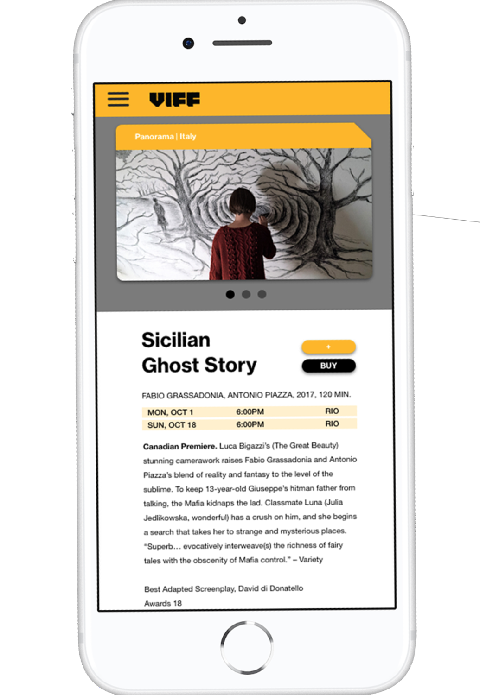

— Interaction Design Project
Client: Vancouver International Film Festival
VIFF is a not-for-profit cultural organization that operates the internationally acclaimed Vancouver International Film Festival (VIFF) and year-round programming of the Vancity Theatre at the Vancouver International Film Centre.
Main Role: Visuals Design, Workshop Facilitation, UI Design
Team: Sanny Trinh, Elene Wenner, Cora Fu, Carolyn Yip
Asides spearheading my role in art direction and churning out grapical assets with the team, we faciliated design thinking workshops to dig deeper into our ethnography studies and built on top of our design iterations with thorough rationale.
Programs: Adobe Illustrator/Photoshop
+ Protopie, Figma, Sketch
Category:
UX with one lead design champion at VIFFUI Interaction
Mobile App Proposal
Brand strategy
VIFF Loop
Presentation Deck

VIFF Loop is an app that provides an efficient method of discovering films at VIFF through AI curation based preferences and availability “Enabling young adults and to experience a film with their friends”
Browse , select & save films to your own watchlist all in one place

Find a movie on their watchlist and compare it with your own schedule.

After viewing the film info, vote for ones you're free to see! Getting your ticket is readily accessible with a ticket purchase option on your calendar's movie card info